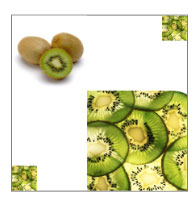

Практическое руководство. Рисование изображения с помощью объекта ImageDrawing
В этом примере показано, как использовать ImageDrawing для рисования изображения. ImageDrawing Позволяет отображать ImageSource с DrawingBrush, DrawingImage, или Visual. Чтобы нарисовать изображение, необходимо создать ImageDrawing и задайте его ImageDrawing.ImageSource и ImageDrawing.Rect свойства. ImageDrawing.ImageSource Свойство задает изображения для рисования и ImageDrawing.Rect свойство указывает положение и размер каждого изображения.
Пример
В следующем примере создается составной рисунок с помощью четырех ImageDrawing объектов. В этом примере получается следующее изображение:

Четыре объекта ImageDrawing
using System;
using System.Windows;
using System.Windows.Controls;
using System.Windows.Media;
using System.Windows.Media.Animation;
using System.Windows.Shapes;
using System.Windows.Media.Imaging;
namespace SDKSample
{
public class ImageDrawingExample : Page
{
public ImageDrawingExample()
{
// Create a DrawingGroup to combine the ImageDrawing objects.
DrawingGroup imageDrawings = new DrawingGroup();
// Create a 100 by 100 image with an upper-left point of (75,75).
ImageDrawing bigKiwi = new ImageDrawing();
bigKiwi.Rect = new Rect(75, 75, 100, 100);
bigKiwi.ImageSource = new BitmapImage(
new Uri(@"sampleImages\kiwi.png", UriKind.Relative));
imageDrawings.Children.Add(bigKiwi);
// Create a 25 by 25 image with an upper-left point of (0,150).
ImageDrawing smallKiwi1 = new ImageDrawing();
smallKiwi1.Rect = new Rect(0, 150, 25, 25);
smallKiwi1.ImageSource = new BitmapImage(new Uri(@"sampleImages\kiwi.png", UriKind.Relative));
imageDrawings.Children.Add(smallKiwi1);
// Create a 25 by 25 image with an upper-left point of (150,0).
ImageDrawing smallKiwi2 = new ImageDrawing();
smallKiwi2.Rect = new Rect(150, 0, 25, 25);
smallKiwi2.ImageSource = new BitmapImage(new Uri(@"sampleImages\kiwi.png", UriKind.Relative));
imageDrawings.Children.Add(smallKiwi2);
// Create a 75 by 75 image with an upper-left point of (0,0).
ImageDrawing wholeKiwi = new ImageDrawing();
wholeKiwi.Rect = new Rect(0, 0, 75, 75);
wholeKiwi.ImageSource = new BitmapImage(new Uri(@"sampleImages\wholekiwi.png", UriKind.Relative));
imageDrawings.Children.Add(wholeKiwi);
//
// Use a DrawingImage and an Image control to
// display the drawings.
//
DrawingImage drawingImageSource = new DrawingImage(imageDrawings);
// Freeze the DrawingImage for performance benefits.
drawingImageSource.Freeze();
Image imageControl = new Image();
imageControl.Stretch = Stretch.None;
imageControl.Source = drawingImageSource;
// Create a border to contain the Image control.
Border imageBorder = new Border();
imageBorder.BorderBrush = Brushes.Gray;
imageBorder.BorderThickness = new Thickness(1);
imageBorder.HorizontalAlignment = HorizontalAlignment.Left;
imageBorder.VerticalAlignment = VerticalAlignment.Top;
imageBorder.Margin = new Thickness(20);
imageBorder.Child = imageControl;
this.Background = Brushes.White;
this.Margin = new Thickness(20);
this.Content = imageBorder;
}
}
}
<Page xmlns="http://schemas.microsoft.com/winfx/2006/xaml/presentation"
xmlns:x="http://schemas.microsoft.com/winfx/2006/xaml"
xmlns:PresentationOptions="http://schemas.microsoft.com/winfx/2006/xaml/presentation/options"
xmlns:mc="http://schemas.openxmlformats.org/markup-compatibility/2006"
mc:Ignorable="PresentationOptions"
Background="White" Margin="20">
<Border BorderBrush="Gray" BorderThickness="1"
HorizontalAlignment="Left" VerticalAlignment="Top"
Margin="20">
<Image Stretch="None">
<Image.Source>
<DrawingImage PresentationOptions:Freeze="True">
<DrawingImage.Drawing>
<DrawingGroup>
<!-- The Rect property specifies that the image only fill a 100 by 100
rectangular area. -->
<ImageDrawing Rect="75,75,100,100" ImageSource="sampleImages\kiwi.png"/>
<!-- This image is set to fill a 25 by 25 rectangular area. -->
<ImageDrawing Rect="0,150,25,25" ImageSource="sampleImages\kiwi.png"/>
<!-- This image is set to fill a 25 by 25 rectangular area. -->
<ImageDrawing Rect="150,0,25,25" ImageSource="sampleImages\kiwi.png"/>
<!-- This image is set to fill a 75 by 75 rectangular area. -->
<ImageDrawing Rect="0,0,75,75" ImageSource="sampleImages\wholekiwi.png"/>
</DrawingGroup>
</DrawingImage.Drawing>
</DrawingImage>
</Image.Source>
</Image>
</Border>
</Page>
Пример, показывающий простой способ отображения изображения без использования ImageDrawing, см. в разделе использование элемента изображения.